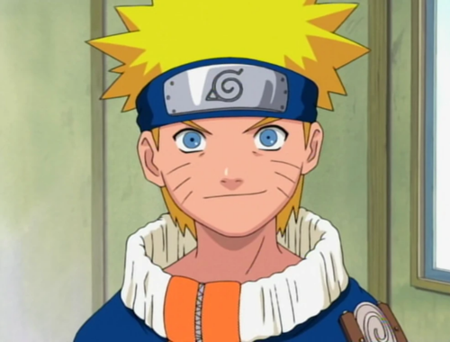
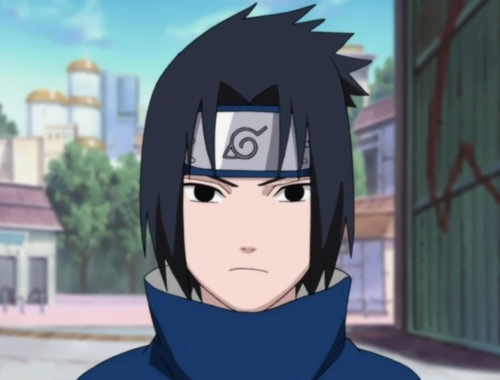
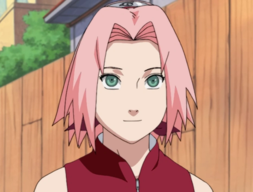
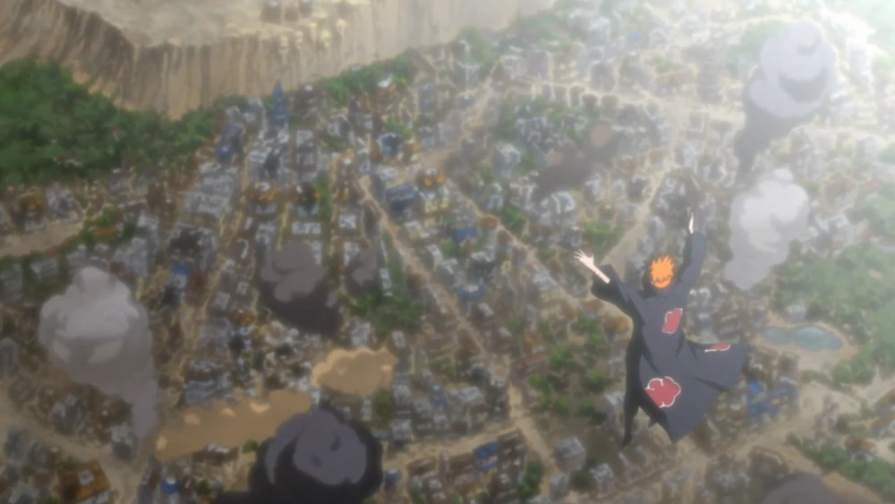
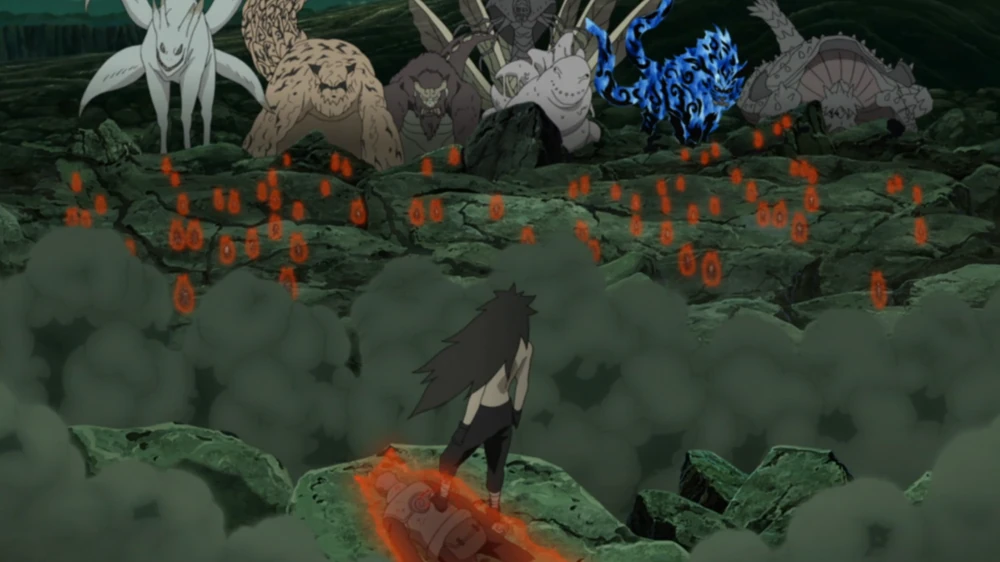
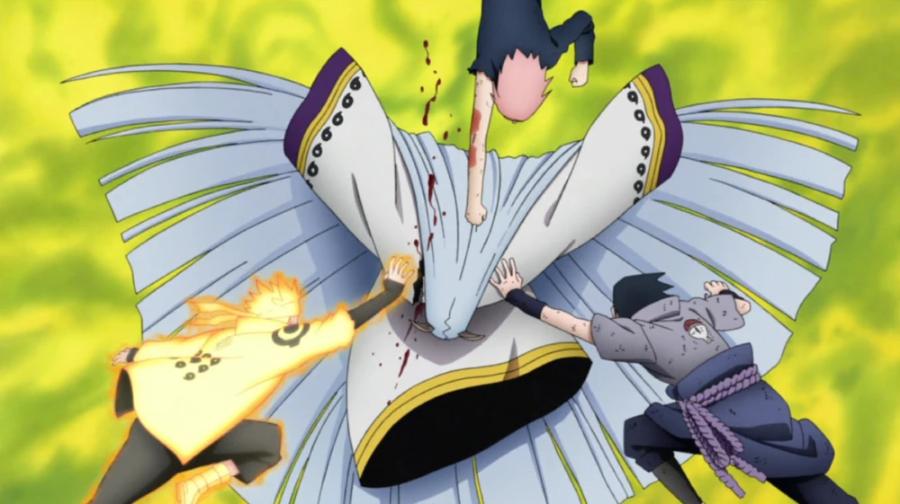

Naruto acompanha a jornada de Naruto Uzumaki, um jovem ninja que deseja se tornar o Hokage, líder de sua aldeia, enquanto lida com a rejeição dos aldeões por ser o recipiente da Raposa de Nove Caudas. Determinado a provar seu valor, ele desenvolve habilidades excepcionais e fortalece laços de amizade com seus companheiros. Ao longo da série, Naruto enfrenta desafios, como missões perigosas e vilões que ameaçam a paz mundial. A trama explora temas de aceitação, superação e a importância das relações humanas, com o apoio de aliados como Sasuke e Sakura, em sua busca para alcançar seu sonho e proteger sua aldeia.
Personagens Principais

Naruto Uzumaki
O protagonista que deseja ser o Hokage.

Sasuke Uchiha
O amigo rival de Naruto, em busca de vingança.

Sakura Haruno
Uma ninja médica e amiga de Naruto e Sasuke.
Episódios Favoritos
Episódio 162
Título: O Mundo Conhecerá a Dor
Episódio 391
Título: A Ascensão de Uchiha Madara
Episódio 473
Título: Sharingan: Novamente
